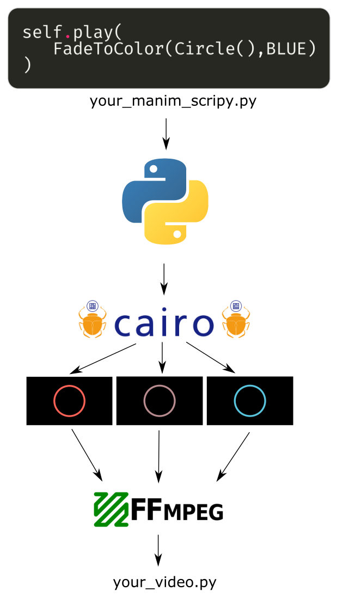
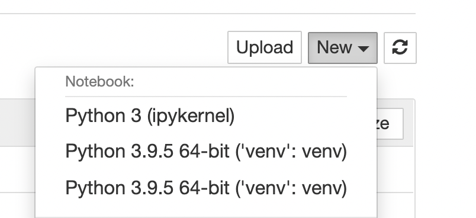
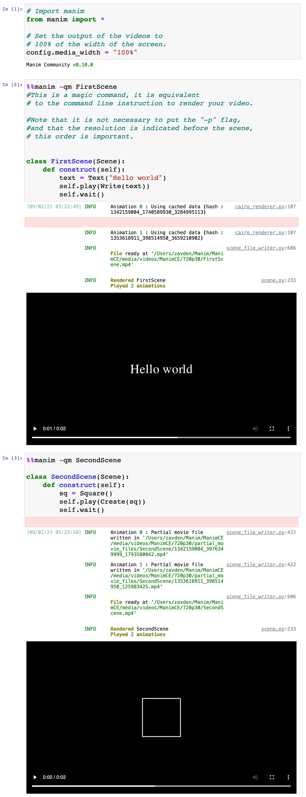

Basic elements¶
ManimCE has three versions, each version uses a different graphics engine: PyCairo, OpenGL and WebGL. The OpenGL and WebGL versions do not yet have stable versions, so in this course the version used by PyCairo will be studied.
How ManimCE works?¶
ManimCE + PyCairo works as follows:
Python reads your script.
Manim’s library converts its language to PyCairo language, and renders every frame.
After all the images are generated, Manim calls FFmpeg to concatenate them into a video.
You can see the complete process in this image.
Basic structure¶
The basic structure of any Manim script is very simple:
# Import manim library
from manim import *
class SceneName(Scene):
"""
By convention, the structure of your animation
is defined in the construct method, but later
we will learn how to do it in different ways.
"""
def construct(self):
# Create a text using Text class
text = Text("Hello world")
# Text animation
self.play(Write(text))
# Pause
self.wait()
First you import the library:
from manim import *Create a class with the name you want to give to your .mp4 file, this class must inherit from the
Sceneclass.Create a
constructmethod.Define your animation structure within the construct method.
Save your script with some name, with the extension .py, let’s say,
my_script.pyTo render your code you must activate your virtual environment and use this command (or some variation):
manim my_script.py SceneName -pql
manim: It is the command that calls the ManimCE library.my_script.py: It is the name of your script.SceneName: It is the name of your class that inherits from theSceneclass.-pql: They are the flags that indicate the resolution of the video.p: Preview - Indicates that when the video is finished rendering, it will automatically open with your default video software. I recommend using mpv.q: Quality - Indicates that the next command will define one of the resolutions that come by default in Manim.l: Low resolution - It indicates that the video will be rendered at 854x480 at 15 fps (REMARK this command must go after theqflag, otherwise it won’t work). You can replace this flag with these other three:m: Medium resolution: 1280x720 at 30FPS.h: High resolution: 1920x1080 at 60FPS.k: 4K resolution: 3840x2160 at 60FPS.
As you can guess, you can define several classes that inherit from the Scene class in your .py file, and when rendering it you simply have to indicate their name on the command line after typing the name of the .py file.
Result:
Warning
Keep in mind that if you render a video that you have already rendered before, this new one will overwrite the previous one, one way to avoid this is by using as an additional flag:
-o FILE_NAME
Where FILE_NAME is the name you want your .mp4 file to have.
Mobjects¶
The objects that can be displayed on the screen are called Mobjects, and there are several types, but the most important are the following three:
Mobject: This is the abstract class that generates all the following Mobjects.ImageMobject: They are raster images, that is, bitmaps, such as PNGs, JPGs, etc. At the moment Manim does not have support for GIFs.VMobject: They are vector figures, in general, Bézier curves, these are the most flexible Mobjects, since you can define your own VMobjects yourself or use the ones that come by default.GroupandVGroup: They are groups of Mobjects and VMobjects respectively, by grouping several Mobjects/VMobjects it allows us to modify these groups in a simpler and faster way.
The Mobjects that we are going to use the most in the basic sections will be subclasses of VMobjects, these are: lines Line, circles Circle, squares Square, texts Text, etc.
It is important to note that the texts are not “pure” VMobjects, the texts are imported SVG that Manim generates using the fonts of your system, the same happens with the texts generated in LaTeX.
We will study the texts in detail in Section 7, the important thing for now is to understand that the texts are SVG that Manim reads and converts them into VMobjects.
Jupyter Notebook¶
In order to use Manim with Jupyter Notebook you must install jupyter in your virtual environment, using:
pip3 install jupyter
To use it simply run in your terminal:
jupyter-notebook
Create a new file, select Python 3 (ipykernel):
{kind=link}
And use it in the following way:
If you use VSCode you can also use it together with Jupyter-Notebook, you just have to indicate your virtual environment to VSCode.
If you are a beginner it is a good idea to use this tool so that your learning is more comfortable.
Add Mobjects to screen¶
There are two ways to add an object to the screen, either with an animation (as we will see below), or by using the Scene.add() method.
This method adds a Mobject instantly, without animation or duration.
If a scene has no duration (that is, it has no animations or pauses) then Manim will render this scene as an image.
Try rendering the following scene with the -pql flags.
class SceneWithoutDuration(Scene):
def construct(self):
sq = Square()
self.add(sq)
# self.wait()
If you try, you won’t get an .mp4 file, as this scene has no duration. If you uncomment the last line then you will get an .mp4 as a result, since the animation will last 1 second.
To get the last frame of a scene (that is, not render it as .mp4, but as PNG image) then use the -ps flags instad -pql.
Animations¶
Types of animations¶
There are two ways to make animations, one is with updaters and the other is using the Scene.play method. The updaters are more advanced and we will see them later.
Scene.play¶
The Scene.play method accepts two types of arguments, either methods of Mobjects as animations and class animations, we will see the methods of Mobjects later after seeing Mobjects properties, the most basic animations are the class animations.
In summary, the ways to make animations are:
Updaters:
Simple updaters
\(\alpha\) updaters
\(\tt dt\) updaters
Scene.play:Methods of Mobjects
Class animations
In this section we will analyze the last one, which is the simplest.
Class animations¶
Types¶
There are already several predefined class animations, and they are divided into 4 groups.
Creation animations: They add an object to the screen.
Indication animations: They help to identify an object on the screen, they are actually a fusion of the other 3 animations.
Transformation animations: They modify the shape or position of an object.
Animations to remove: They remove an object from the screen.
Attributes¶
Every class animation has the following main properties:
run_time(float): It is the duration of the animation.rate_func(function): It is the behavior of the animation, most of them aresmooth, but they can also be:
def linear(t: typing.Union[np.ndarray, float]) -> typing.Union[np.ndarray, float]:
return t
def smooth(t: float, inflection: float = 10.0) -> np.ndarray:
error = sigmoid(-inflection / 2)
return np.clip(
(sigmoid(inflection * (t - 0.5)) - error) / (1 - 2 * error),
0,
1,
)
def rush_into(t: float, inflection: float = 10.0) -> np.ndarray:
return 2 * smooth(t / 2.0, inflection)
def rush_from(t: float, inflection: float = 10.0) -> np.ndarray:
return 2 * smooth(t / 2.0 + 0.5, inflection) - 1
def slow_into(t: np.ndarray) -> np.ndarray:
return np.sqrt(1 - (1 - t) * (1 - t))
def double_smooth(t: float) -> np.ndarray:
if t < 0.5:
return 0.5 * smooth(2 * t)
else:
return 0.5 * (1 + smooth(2 * t - 1))
def there_and_back(t: float, inflection: float = 10.0) -> np.ndarray:
new_t = 2 * t if t < 0.5 else 2 * (1 - t)
return smooth(new_t, inflection)
def there_and_back_with_pause(t: float, pause_ratio: float = 1.0 / 3) -> np.ndarray:
a = 1.0 / pause_ratio
if t < 0.5 - pause_ratio / 2:
return smooth(a * t)
elif t < 0.5 + pause_ratio / 2:
return 1
else:
return smooth(a - a * t)
def running_start(t: float, pull_factor: float = -0.5) -> typing.Iterable:
return bezier([0, 0, pull_factor, pull_factor, 1, 1, 1])(t)
def not_quite_there(
func: typing.Callable[[float, typing.Optional[float]], np.ndarray] = smooth,
proportion: float = 0.7,
) -> typing.Callable[[float], np.ndarray]:
def result(t):
return proportion * func(t)
return result
def wiggle(t: float, wiggles: float = 2) -> np.ndarray:
return there_and_back(t) * np.sin(wiggles * np.pi * t)
def squish_rate_func(
func: typing.Callable[[float], typing.Any],
a: float = 0.4,
b: float = 0.6,
) -> typing.Callable[[float], typing.Any]: # what is func return type?
def result(t):
if a == b:
return a
if t < a:
return func(0)
elif t > b:
return func(1)
else:
return func((t - a) / (b - a))
return result
# See all in manim/utils/rate_functions.py
remover(bool): It isTruewhen the intention of the animation is to remove the Mobject from the screen, some class animations that have this attr asTrueareFadeOutandUncreate.Mobject(Mobject): Some animations only accept VMobjects (likeWrite) or some specific Mobject for that animation, while others accept any Mobject (likeFadeIn).
There are some rules for using Scene.play, one of the most important is that you cannot animate a Mobject twice in the same Scene.play method.
In the example below, you couldn’t have more than one uncommented animation.
class BasicAnimations(Scene):
def construct(self):
text = Text("Hello word")
self.play(
Write(text),
# FadeIn(text),
# GrowFromCenter(text),
# FadeInFromLarge(text, scale_factor=2), # <- Some animations require more arguments to work.
)
self.wait() # <- It is advisable to always have a wait at the end
And in general, it is always advisable to have a Scene.wait at the end so that the above animation does not have strange behaviors.
Multiple animations at the same using Scene.play¶
class MultipleAnimationSameTime(Scene):
def construct(self):
square = Square()
circle = Circle()
self.play(
Create(square),
FadeIn(circle)
)
self.wait()
Show result
Animations with arguments¶
Of all animations:
class ChangeDuration(Scene):
def construct(self):
self.play(
Create(Circle()),
FadeIn(Square()),
run_time=3,
rate_func=linear
)
self.wait()
Show result
Of each animation:
class ChangeDurationMultipleAnimations(Scene):
def construct(self):
self.play(
Create(
Circle(),
run_time=3,
rate_func=smooth
),
FadeIn(
Square(),
run_time=2,
rate_func=there_and_back
),
GrowFromCenter(
Triangle()
)
)
self.wait()
Show result
More animations¶
class MoreAnimations(Scene):
def construct(self):
text = Text("Hello world")
self.play(Write(text))
self.wait()
self.play(Rotate(text,PI/2))
self.wait()
self.play(Indicate(text))
self.wait()
self.play(FocusOn(text))
self.wait()
self.play(ShowCreationThenDestructionAround(text))
self.wait()
self.play(FadeOut(text))
self.wait()
Show result
Where to see all the predefined animations¶
Some time ago I made this small documentation of all ManimCairo animations, the use of animations is not the same in ManimCE but you can get an idea of how they work.
The source code of all class animations are in manim/animations.